Final Exam, Friday, December 16, 2005.
Please do all three problems. Show all work. No books or calculators allowed.
You may use any result from class, the homeworks, or the texts, except where
stated.
You may use one sheet of handwritten notes.
The exam lasts three hours.
- 1.
- (30 points; each part is worth 10 points)
Consider the knapsack problem
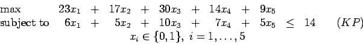
Let P denote the feasible region of (KP).
- (a)
- Recall that a cover is a set of variables xj whose constraint coefficients aj
add up to more than b. Any feasible solution cannot have all of these xj=1.
Give three minimal cover inequalities satisfied by all feasible solutions to (KP).
(Note: there are more than three minimal cover inequalities for this problem.)
- (b)
- The inequality
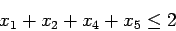
is valid for
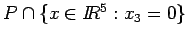
Lift this inequality to give a valid inequality for P.
- (c)
- Let s denote the slack in the original knapsack constraint,
and
let si=1-xi
for 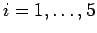.
The optimal solution to the LP relaxation is to take x1=x2=1,
x3=0.3, and x4=x5=0.
One row of the optimal simplex tableau
can be written
x3 + 0.7x4 + 0.5 x5 - 0.6 s1 - 0.5 s2 + 0.1s = 0.3.
Show that the Gomory cutting plane procedure applied to this constraint
gives a constraint equivalent to a cover inequality.
Is it a minimal cover inequality?
- 2.
- (50 points, each part is worth 10 points)
Let G=(V,E) be a graph with edge weights we
and let 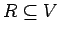
be a set of required vertices.
The Steiner tree problem is to find the minimum weight tree
in G that includes every vertex in R.
In the following complete graph on four vertices,
vertices 1, 2, and 3 are required, so R={1,2,3}.
Edge lengths are indicated.
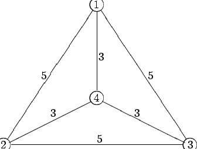
- (a)
- A feasible solution to a Steiner tree problem can be obtained by finding a
minimum spanning tree on the subgraph of G induced by the vertices in R.
Show that the minimum spanning tree on this subgraph is not optimal
for the Steiner tree problem on this graph.
- (b)
- A first attempt to formulate
the Steiner tree problem on this graph as an
integer programming problem is the following:
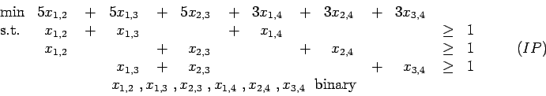
The upper bound constraints 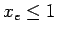
are redundant in the LP relaxation,
so the dual to the LP relaxation can be written
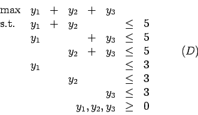
Show that the optimal value of the LP relaxation is 7.5, by finding primal and dual
feasible solutions with this value.
- (c)
-
- i.
- Why are the following constraints valid for the Steiner Tree Problem:
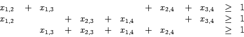
- ii.
- Give a feasible integral solution to (IP) that violates one of these constraints
and does not correspond to a Steiner tree.
- (d)
- Let S be the set of incidence vectors of feasible solutions to the Steiner tree problem.
The constraint
is valid for S.
Show that adding this constraint to the LP relaxation of (IP) results in
an optimal value of 9, and hence gives a proof that the optimal Steiner tree
uses the edges (1,4), (2,4), and (3,4).
- (e)
- By considering the valid constraints
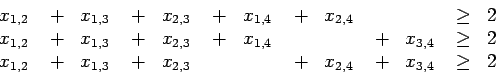
or otherwise,
show that constraint (1) does not define a facet
of S.
(You may assume that S has dimension equal to 6.)
- 3.
- (20 points; each part is worth 10 points)
We have an integer program of the form
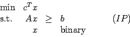
where b>0 and c>0, and each nonzero element aij of A satisfies
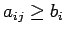.
- (a)
- Show that the optimal solution to the LP relaxation of (IP)
can be used to find a feasible integer solution.
- (b)
- Let p be the maximum number of nonzeroes in any row of A.
Give a polynomial time algorithm to find a feasible integer
solution that has value within a factor of p of the optimal value.
About this document ...
John E. Mitchell
2007-04-27